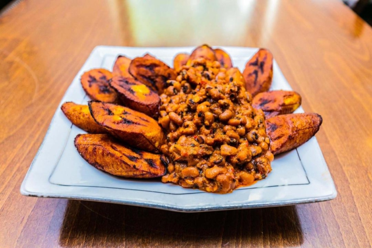

Description
The Gari and Beans meal, popularly known as 'gob3' is my personal favorite meal. From the name of the meal, it can be derived that the meal is made of 'gari' - roasted cassava flakes and beans. This meal can be garnished with palm oil and fried ripe plantain. This meal is very popular among Ghanaian students because it is affordable, delicious and keeps you full for a long time.
Ingredients
- 1/2 cup of black eyed beans
- 200ml palm oil
- 1 large onion
- 1 tbsp powdered pepper
- Salt to taste
- Maggi spice
- Two tomatoes
- 1/2 clove of garlic
- 1 Small salted fish (momone or koobi)
- 1 cup gari
- 1 Avocado pear
- 2 ripe plantains
- 100ml cooking oil
Steps
Preparation of the beans
- Soak the beans in water for 2-3 hours.
- When it softens, wash with water and boil till it becomes very soft.
- Please do not drain when it is cooked. Mash the beans with a spoon.
- Place a saucepan on fire.
- Put the palm oil in it.
- Wash and chop your onions.
- Put the chopped onions in the hot palm oil.
- Let it fry and add the pepper and tomato sauce.
- Add salt to taste and let it cook for 2 mins.
- Add the mashed beans and stir it for it to mix uniformly. At this stage the beans stew is ready.
Preparation of the ripe plantain
- Place a frying pan on the fire.
- Put some cooking oil in the pan.
- Wash and peel the ripe plantain.
- Cut it into pieces and fry it in the oil. When it turns into brown it is ready.
- Take it from the oil unto a plate.
- Peel the pear and dice it.
Serving
- Dish 3 spoons of beans stew and 1 spoon of gari.
- Add some pieces of fried plantain.
- Add the diced avocado pear.
Enjoy your delicious gob3!
Return to the top
Return to the main page